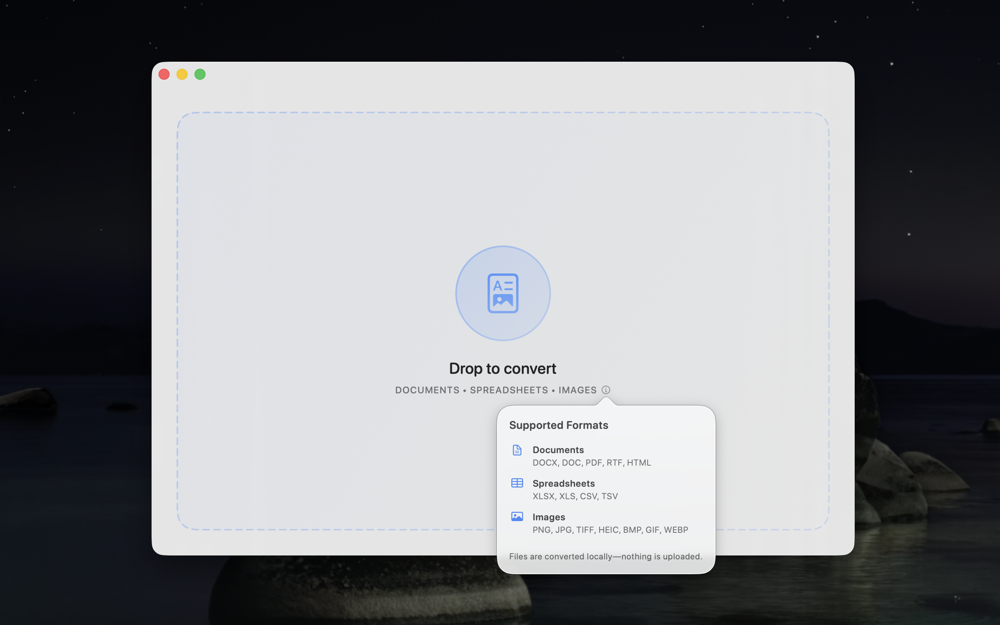
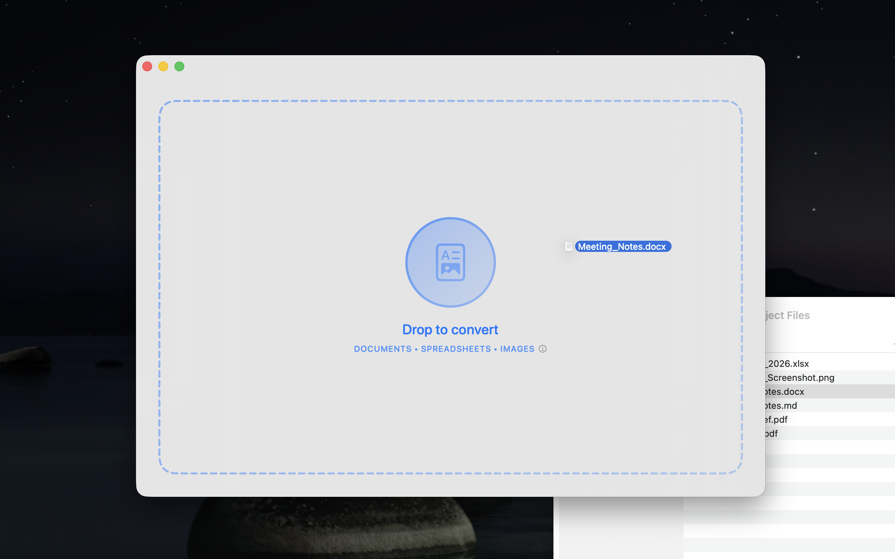
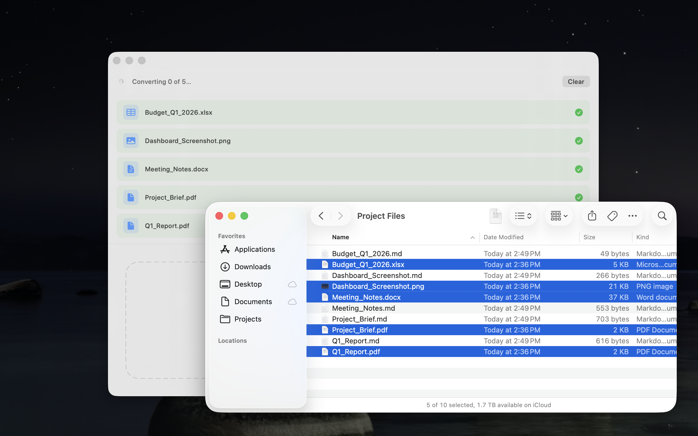
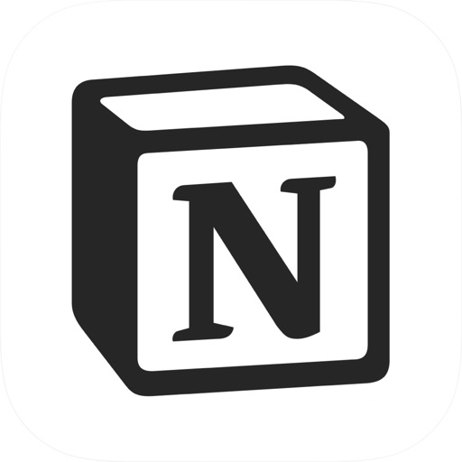

Convert anything
to Markdown.
Drop in a Word doc, PDF, spreadsheet, or image. Get clean GitHub Flavored Markdown back. Everything happens on your Mac — nothing leaves your machine.



Markdown is the plain-text format that Obsidian, Bear, and Notion natively speak — and what AI tools like Claude and ChatGPT read and write fastest. Clean Markdown saves time and precious tokens.
Drag & drop
Drop files onto the window or use ⌘O. Drag in a whole folder and Markedly finds every supported file inside automatically. Converted files are saved right alongside your originals.
Fully local
No uploads, no accounts, no analytics. All conversions run on-device, so your files stay private and the app works without an internet connection.
Shortcuts & Services
Convert files without opening the app. Works with the Shortcuts app for automations and the right-click Services menu in Finder for quick one-off conversions.
GitHub Flavored Markdown
Outputs GFM — the widely adopted standard that adds tables, strikethrough, task lists, and more on top of core Markdown. Natively supported by Obsidian, Notion, Bear, and most AI tools.
Documents — DOCX · DOC · RTF · HTML
PDF — PDF
Spreadsheets — XLSX · XLS · CSV · TSV
Images — PNG · JPG · TIFF · HEIC · GIF · BMP

NotionSupporting Friedreich’s Ataxia research
Markedly is free, and always will be. In place of a price tag, there’s a donation link to the Friedreich’s Ataxia Research Alliance (FARA) — a nonprofit funding research into a progressive neurological condition with no known cure that directly impacts my family. If Markedly saves you time, consider passing it forward.
Donate to FARAPrivacy Policy
Last updated: March 15, 2026
Overview
Markedly is a file conversion tool for macOS that operates entirely on your local device.
Data Collection
Markedly does not:
- Collect any personal information
- Upload files to remote servers
- Track usage or analytics
- Require user accounts or sign-in
- Share data with third parties
All file conversions happen locally on your Mac. Nothing leaves your machine.
External Links
Markedly includes a menu item linking to the Friedreich’s Ataxia Research Alliance (FARA) donation page. This is an external website with its own privacy policy.
Contact
Questions about this privacy policy? Use the support link above.